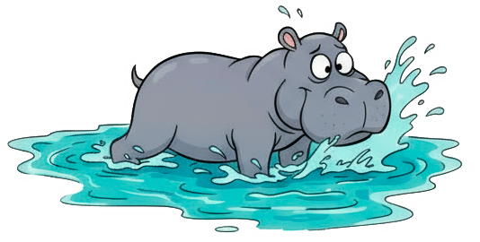
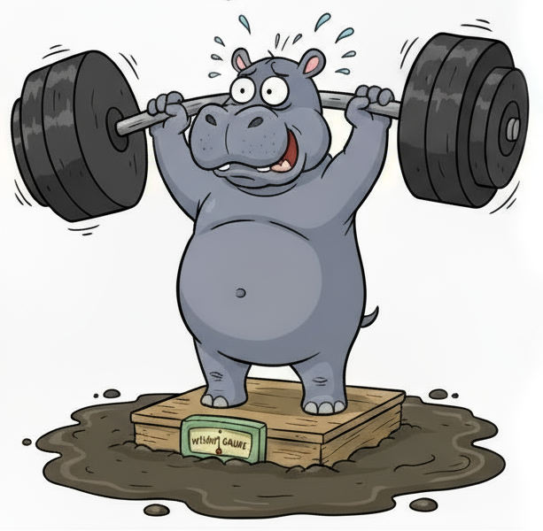

Hippofit
Tsunami Emergency
Tsunami Emergency
Indberet din flodhest her! Jo før den starter sin slankekur, jo bedre chancer har vi mod tsunamien.
Se mereEn lokal flodhest er sat på en ekstrem slankekur for at...

En lokal flodhest er sat på en ekstrem slankekur for at blive hurtigere og stærkere - ikke kun for sin egen skyld, men for at kunne redde alle i sit område fra en truende tsunami.
Dyrepassere, dyrlæger og katastrofeeksperter overvåger hver detalje af dens kost og træning. Hver dag svømmer flodhesten lange distancer, leger i vandet og styrker sine muskler, så den kan navigere hurtigt gennem oversvømmede områder og hjælpe andre dyr og mennesker i sikkerhed.
For at kunne redde alle må flodhesten være...
For at kunne redde alle må flodhesten være let, smidig og udholdende.
Fibre og grøntsager erstatter sukkerholdige snacks, måltiderne deles op i små portioner, og daglige svømmeture træner både fart og styrke. Leg og hurtighedsøvelser forbereder flodhesten på at reagere på pludselige bølger og strømme, mens den guider andre til sikker grund.
Selvom flodhesten gør fremskridt, er teamet hele tiden opmærksom...
Selvom flodhesten gør fremskridt, er teamet hele tiden opmærksom på tegn, der kan indikere, at den ikke når at blive tsunami-klar.
Eksperterne overvåger flodhestens fysiske tilstand minutiøst, for enhver lille svaghed kan få katastrofale konsekvenser. Langsomme bevægelser på land eller i vandet, små fedtdepoter, der nedsætter smidigheden, og kortpustethed efter blot få minutters aktivitet er alle alvorlige advarsler om, at flodhesten måske ikke når frem til alle, der er afhængige af dens indsats.
Redningsholdet ved, at tiden er knap, og at selv et sekunds forsinkelse kan ændre udfaldet for de dyr og mennesker, der skal reddes. Hver ændring i flodhestens energi, humør eller reaktionsevne bliver straks rapporteret og analyseret. Selv de mindste tegn på træthed udløser nye justeringer i træning og kost, så helten kan få maksimal styrke og smidighed i tide.